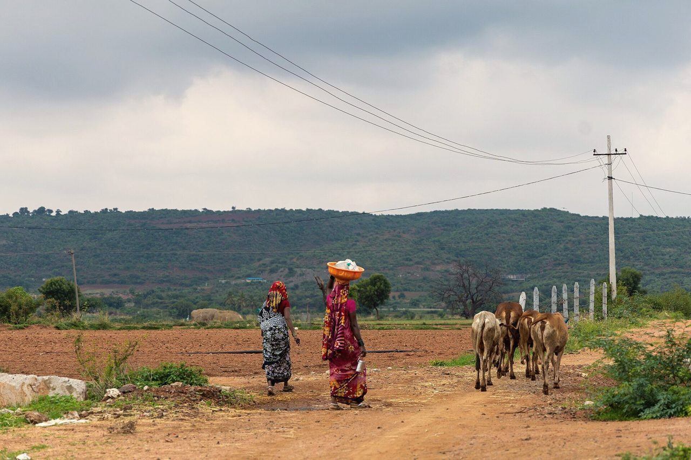

Earthspired
Honest ingredients and considered materials, drawn from the earth and carried gently into the everyday.
MilletAmaranthAshwagandhaAmlaHandloomTurmericBlock printSpirulinaShilajitAloe veraGinger
MilletAmaranthAshwagandhaAmlaHandloomTurmericBlock printSpirulinaShilajitAloe veraGinger
Savour · Live · Nourish
Something to savour, something to live with, something to return to.
Each begins in the same place — with something real, chosen for where it comes from — and finds its own way into your day.
Our brands
Shop by category
Where it begins
It starts in the fields.
Long before anything reaches your table, your home or your daily ritual, it begins with soil, seasons and the hands that tend them across rural India.
Close to the source
Real grains, time-honoured botanicals and considered materials — grown, gathered and carefully made, then carried into your every day.
Our story
From Source to Everyday
Earthspired began with a simple belief: that the things we eat, live with and care for ourselves with should stay close to where they came from.
So we start at the source — a grain baked rather than fried, a botanical in its simplest form, a plate made to be used every day — and carry it, carefully, into the everyday.
Read our story →


